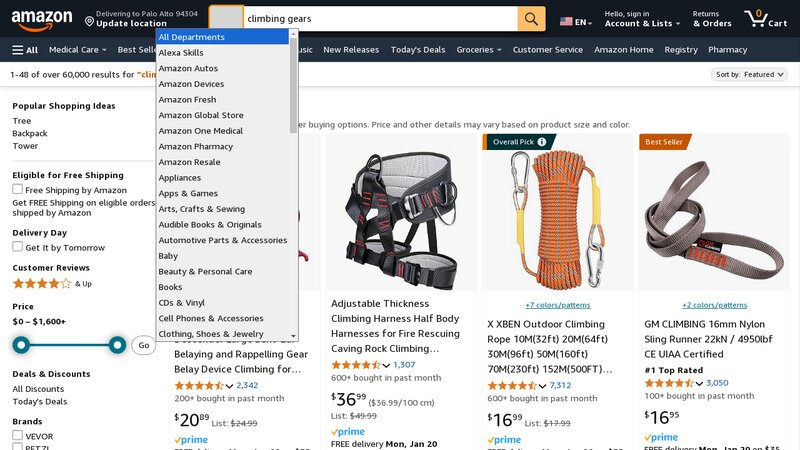
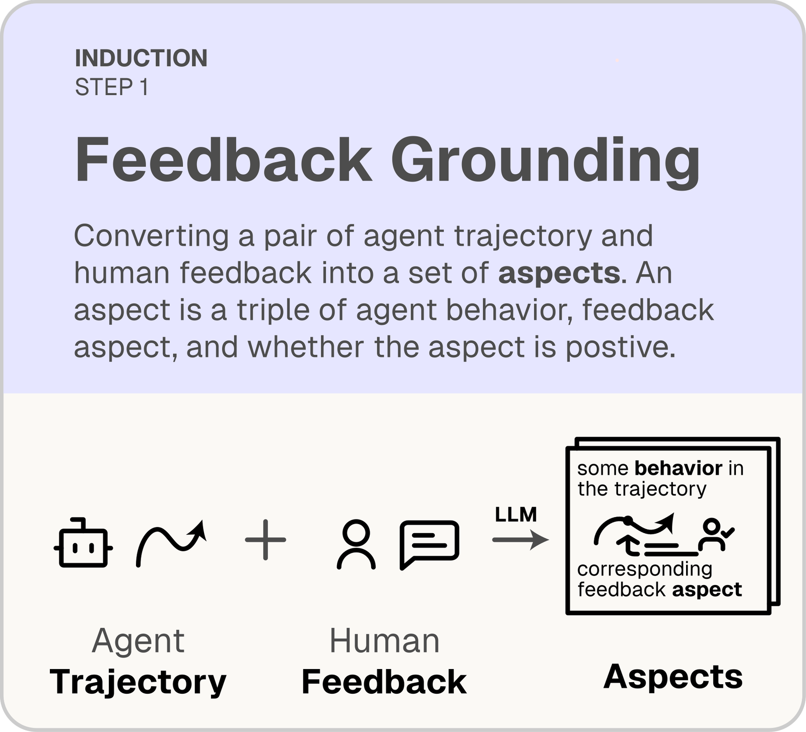
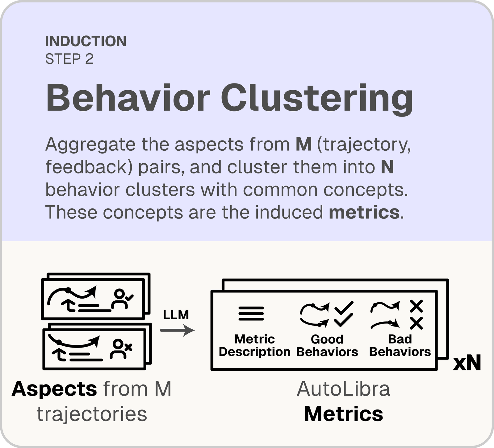
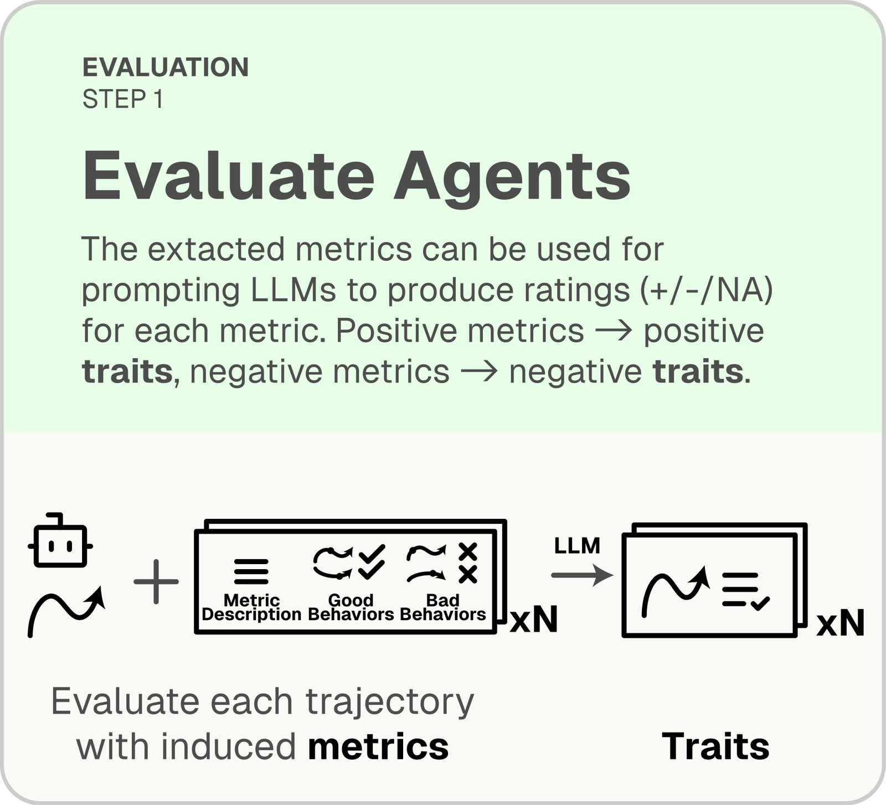
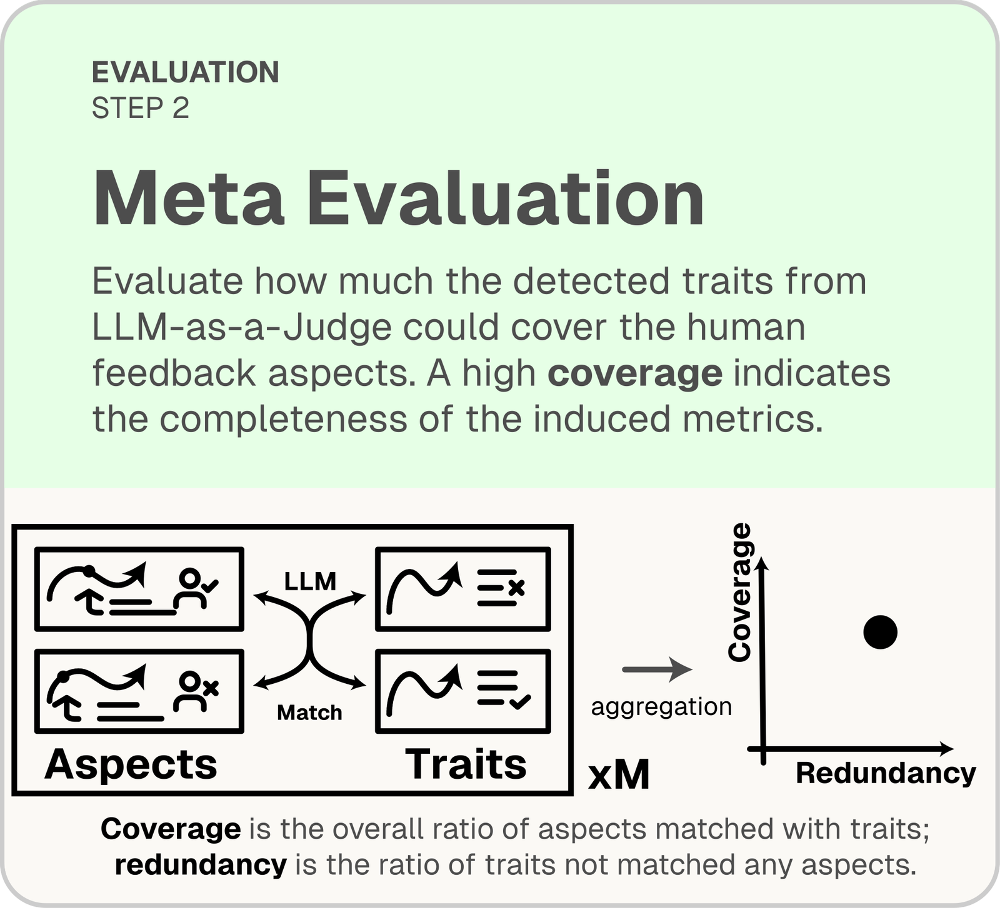
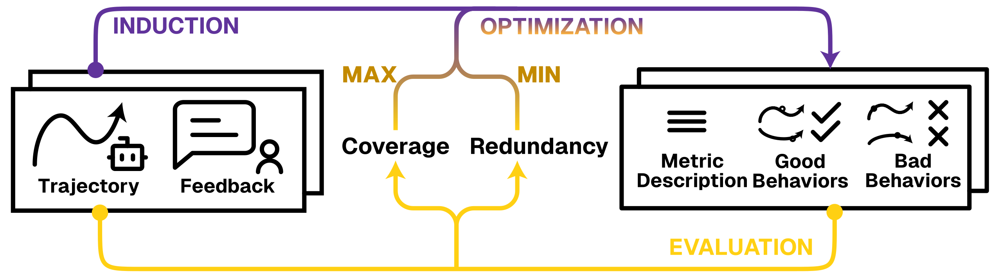
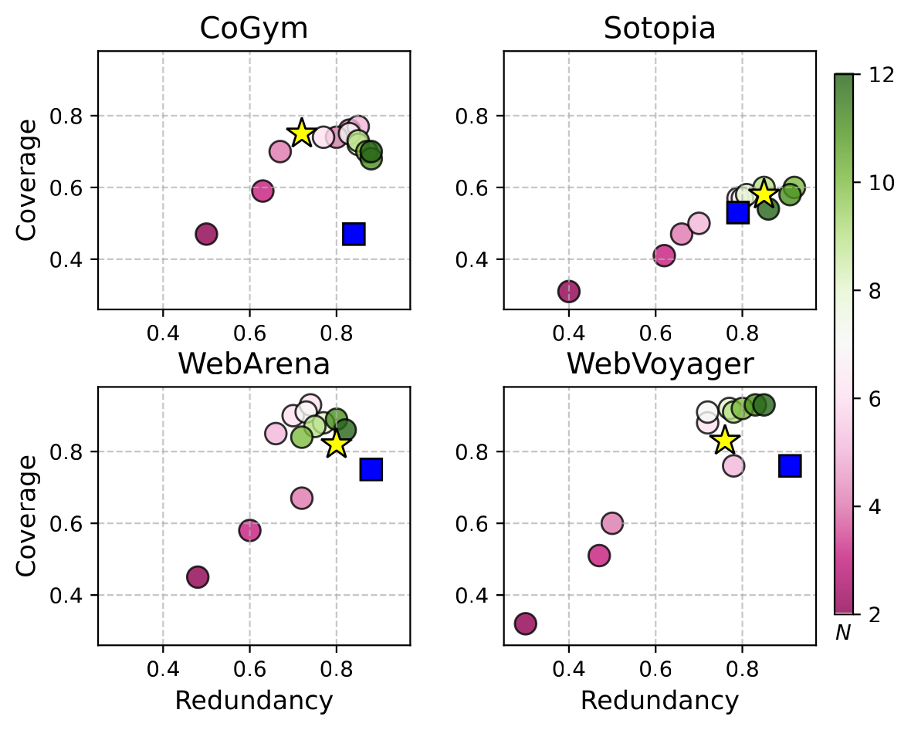
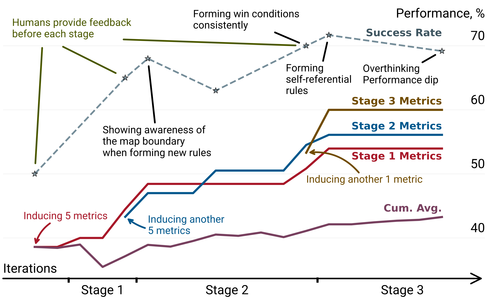
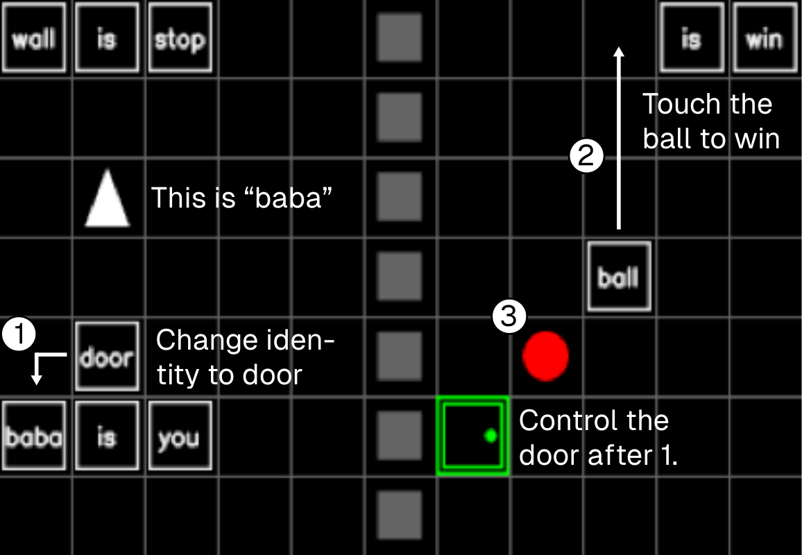
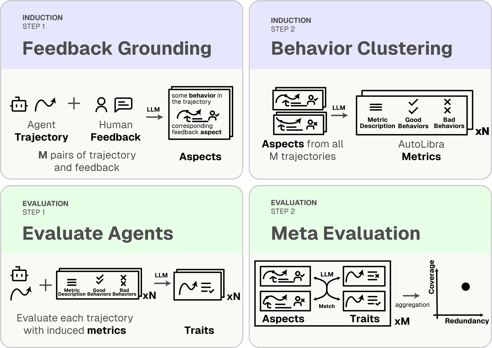

TL;DR. Task success is a blunt instrument for evaluating AI agents. AutoLibra turns informal natural-language feedback — from end-users or expert annotators — into concrete, fine-grained metrics that diagnose why agents succeed or fail, and serve as optimization targets that improve agents by >20% success rate with only 18 annotated trajectories per stage.
Induce Metrics
Ground open-ended feedback to specific behaviors, cluster similar behaviors, and induce interpretable metrics with definitions and concrete examples.
Evaluate Agents
AutoLibra as a lens: discover fine-grained and novel failure modes across web, social, collaborative, and game environments.
Improve Agents
AutoLibra as a ladder: use induced metrics as optimization targets to improve prompts, with self-regulated iterative training.
From a sentence of feedback to a fleet of metrics
A user watches a web agent shop for a phone and writes: "the agent did not choose iPhone 14/15." AutoLibra grounds that aspect to the agent's action (selecting iPhone 16 Pro from a drop-down), clusters it with similar behaviors across trajectories, and distills a reusable metric — Element Interaction Accuracy.
Collect human feedback for agent trajectories
Ground feedback into aspects
Induce metrics from aspects

Click "All Departments"Evaluates if the agent interacts with the correct UI elements. Good behaviors show accurate targeting of links, buttons, and textboxes; bad behaviors…
- Agent correctly uses the search bar to search for news related to Brexit.
- Agent uses the filter feature to check for audio datasets.
- …
Craft and refine search queries…
These metrics are ready to be used for agent evaluation
Judgment with LLMs
Evaluate how much unseen human feedback is covered
Recipe by the agent contained no chicken breast or quinoa.
The agent efficiently found a recipe.
3 out of 4 detected traits are redundant.
Task success isn't enough
Agents today are primarily evaluated by coarse task-success metrics that experts hand-design up front. Those metrics miss why an agent fails, overlook emergent behaviors, and don't scale to new domains. On the other hand, humans readily describe what went well or poorly — "If you find that the button is disabled, don't click it again," or "this agent has too much autonomy."
AutoLibra closes this gap: it treats free-form feedback as the signal, and the metrics themselves as the output. Inspired by thematic analysis in social sciences, the pipeline grounds each aspect of feedback to concrete agent behaviors, then clusters them into a minimal set of reusable, interpretable metrics — no per-task metric design required.
A closed loop: induce, evaluate, meta-evaluate
AutoLibra is a closed-loop pipeline. An induction process converts agent trajectories and open-ended feedback into metrics. An evaluation process applies those metrics with an LLM-as-a-Judge, then meta-evaluates the metrics by measuring their coverage and redundancy against unseen feedback.
Feedback grounding
Break down each piece of feedback into aspects — triples of (behavior, feedback, sign) — each pointing to a specific part of the agent trajectory.

Behavior clustering
Cluster similar aspects with an LLM; each cluster becomes a metric with a definition plus positive and negative behavior examples.

LLM-as-a-Judge
An LLM rates each agent trajectory on every induced metric with {+1, −1, N/A}, producing positive and negative traits.

Meta-evaluation
Match traits to aspects on unseen feedback. Coverage = fraction of aspects matched; redundancy = fraction of traits unmatched.


AutoLibra as a lens for agent behavior
Across four diverse agent domains — collaborative (CoGym), social (Sotopia), web (WebArena, WebVoyager) — AutoLibra induces metrics that are more concrete than expert-designed categories and surfaces novel evaluation dimensions.

Coverage on WebArena and WebVoyager, with held-out performance within 5% of the induction set.
Human-validated agreement on grounding, LLM-as-a-Judge, and meta-evaluation steps across five datasets.
Metrics like Negotiation Tactics (Sotopia) and Query Search Strategy (WebVoyager) are missed by expert frameworks.
On CoGym, AutoLibra not only recovers the five failure categories proposed by the authors — it decomposes Communication into Responsiveness & Efficiency and Communication Clarity, revealing that a single expert label was concealing two distinct behaviors.
AutoLibra as a ladder for agent improvement
AutoLibra-induced metrics aren't just diagnostic — they're optimization targets. On the challenging 2D game Baba-Is-AI, 3 stages of iterative feedback (only 18 trajectory annotations per stage) drive >20% absolute improvement on task success — without ever optimizing for success rate directly.


What the agent learned, stage by stage
-
1
Reading the map and finding rules to form, guided by
map-n-constraint-recognition. -
2
Assembling new win conditions, guided by
rule-manipulation-proficiency. - 3 Handling self-referential rule changes — a metacognitive skill that frontier LLMs struggle with.
The full AutoLibra pipeline

Try AutoLibra on your own agents
A minimal walkthrough to induce and evaluate metrics on your own trajectories. For the full guide, see the codebase README.
-
1
Install
Clone the repo and install with uv.
git clone https://github.com/Open-Social-World/autolibra cd autolibra uv sync
-
2
Download trajectories & feedback
Pull the annotated datasets from our Hugging Face hub (CoGym, Sotopia, WebArena, WebVoyager, Baba-Is-AI, MiniHack).
git lfs install git clone https://huggingface.co/datasets/open-social-world/autolibra .data
-
3
Annotate your own trajectories
Use the TTY annotator, or launch the Streamlit UI for a browser interface.
# Terminal uv run python src/tty/tty_annotation.py .data/webarena .data/annotations/webarena \ --annotator-id <your-name> # Streamlit UI uv run streamlit run src/tty/tty_annotation.py .data/sotopia .data/annotations/sotopia \ -- --annotator-id <your-name> --use-streamlit -
4
Induce metrics & evaluate
Run the generator over feedback + trajectories to produce metrics, then evaluate agents with an LLM-as-a-Judge.
uv run python -m autolibra_core.gen_eval.generator
Cite AutoLibra
If you use AutoLibra in your research, we'd appreciate a citation.
@inproceedings{zhu2026autolibra,
title = {AutoLibra: Agent Metric Induction from Open-Ended Human Feedback},
author = {Hao Zhu and Phil Cuvin and Xinkai Yu and
Charlotte Ka Yee Yan and Jason Zhang and Diyi Yang},
booktitle = {The Fourteenth International Conference on Learning Representations},
year = {2026},
url = {https://openreview.net/forum?id=4BjGVZ7Bxn}
}
Acknowledgments
This work is supported by ONR grant N000142412532, NSF grant IIS-2247357, and DARPA grant Friction for Accountability in Conversational Transactions. We thank Google Cloud Platform and Modal for compute credits, and all members of Stanford SALT Lab for their feedback throughout this project.